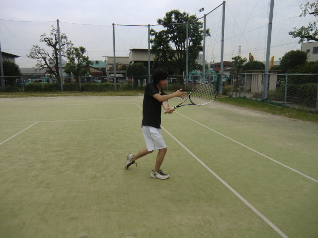
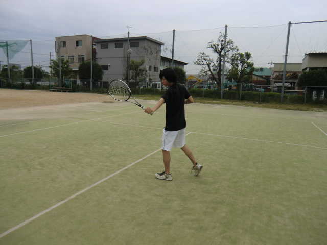

ボ
レー（フォア＆バック）
フォアボレー
バックボレー

フォアボレー
フォアボレーではラケットに手を添えた状態から、前にボールを押し出すように打っていきます。そして、ストロークの時と同じように前に体重をかけてボールに勢いをつけます。

バックボレー
バックボレーではイースタングリップ持ちに変え、腕をピンとまっすぐにし、押し出すように打ちます。（バックボレーでウエスタングリップにするかイースタングリップにするかは自由なのでどちらかやりやすい方を選ぶようにしてください。）